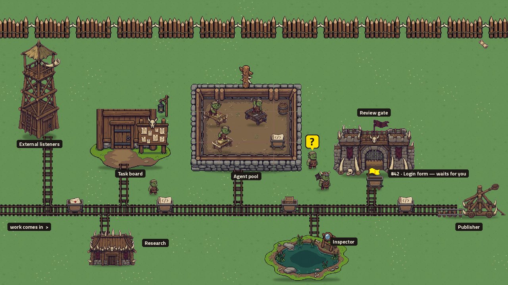

A control room for coding agents · alpha
Build the factory that builds your side project.
Your coding agents as a town you grow after work. Work comes in, the orks refine it on the line, you pass it at the gate, and finished goods are catapulted over the wall.

Install in one line (macOS, Linux)
curl -fsSL https://orkcraft.dev/install.sh | shIt puts uv, a Python and Orkline in place, logs each step, and opens the town.
Read the script first.
With Homebrew: brew tap orkcraft/orkcraft https://github.com/Orkcraft/orkcraft then
brew install orkcraft/orkcraft/orkcraft. Try orkline --demo for a sandbox town:
nothing real is touched and no model is called.
Made for the way home
-
1 A day of other people's work
Merge requests to review, calls to sit through. Your own project waits. Meanwhile the town works on it, and keeps quiet: no pings in working hours, questions gathered for later.
-
2 The phone, on the way home
What was built first, then the one question, then what it cost. Answer it between two stations, pass or send back a result. A look, not a second job.
-
3 The laptop at home, the camp
Open the same town, now in Camp. Pick up what the orks left at the gate and go on building your own thing, for the joy of it.
A factory, not a dashboard
Every task is a cart. It has one life, and you learn its shape once.
- Work comes inFrom External listeners (mail, GitHub, a webhook), the Task board, or the town's clock at its hour.
- The lineCarts roll down roads between buildings. In the Agent pool the orks (your Claude Code, Codex or Antigravity sessions) do the work; scripts do what needs no model.
- The Review gateNothing leaves without your nod. A result waits for you with its diff; you pass it or send it back.
- The PublisherThe passed cart is launched: a pull request opened, a reply sent. Drawn in Camp as a catapult at the wall.
The score: less wood per accepted result
🪵 Wood is tokens. The game is not to spend less in total, which doing nothing wins, but to spend less wood and less of your plan's limit for each result you accept. The cheapest thing that works wins: a script before an agent, a smaller model where it is enough.
12 launched this week · 30 % less wood each
Office at work. Camp after work. The same town.
How it differs
Other tools show your agents. Orkline runs the work.
Tasks go down roads between buildings, through a review gate, and the game is spending less per accepted result. Several vendors in one town; you see who is working, who waits for you, and what each result cost.
What it is not
- No cloud. The town runs on your computer; your code stays there.
- No API keys. It talks to models only through the command-line tools you already have:
claude,codex,agy. - Your own subscriptions. Your sign-in, your plan's limits, with budgets you set and Stop all one click away.
- Open source, Apache 2.0. Checked on macOS.
Come and build a town
Orkline is in alpha and made in the open. Bring your bugs, ideas and towns.